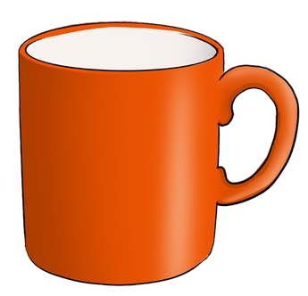
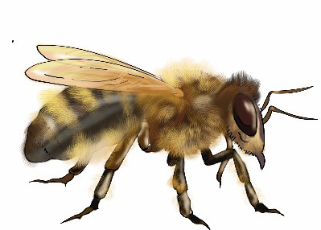
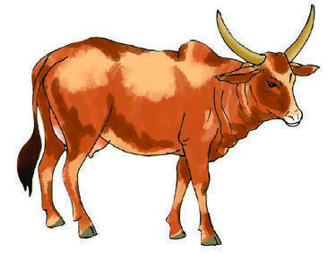
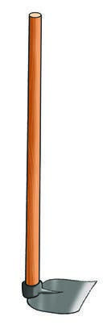
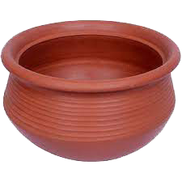
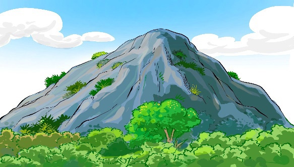

Tambua picha kwa kuitazama, kuchunguza kitu halisi au mchoro mguso, kisha andika jina lake; tumia eneo la kuandikia, kibodi au Breli.

Bilauri ya rangi ya machungwa yenye kishikio.Tambua picha kwa kuitazama, kuchunguza kitu halisi au mchoro mguso, kisha andika jina lake; tumia eneo la kuandikia, kibodi au Breli.

Bilauri ya rangi ya machungwa yenye kishikio.Tambua picha kwa kuitazama, kuchunguza kitu halisi au mchoro mguso, kisha andika jina lake; tumia eneo la kuandikia, kibodi au Breli.

Nyuki mwenye mabawa, miguu sita na mwili wenye mistari.Tambua picha kwa kuitazama, kuchunguza kitu halisi au mchoro mguso, kisha andika jina lake; tumia eneo la kuandikia, kibodi au Breli.

Ng'ombe wa kahawia mwenye pembe.Tambua picha kwa kuitazama, kuchunguza kitu halisi au mchoro mguso, kisha andika jina lake; tumia eneo la kuandikia, kibodi au Breli.

Jembe lenye mpini mrefu wa mbao na chuma chini.Tambua picha kwa kuitazama, kuchunguza kitu halisi au mchoro mguso, kisha andika jina lake; tumia eneo la kuandikia, kibodi au Breli.

Chungu cha udongo cha mviringo.Tambua picha kwa kuitazama, kuchunguza kitu halisi au mchoro mguso, kisha andika jina lake; tumia eneo la kuandikia, kibodi au Breli.

Mlima mrefu wenye miti chini na mawingu juu.